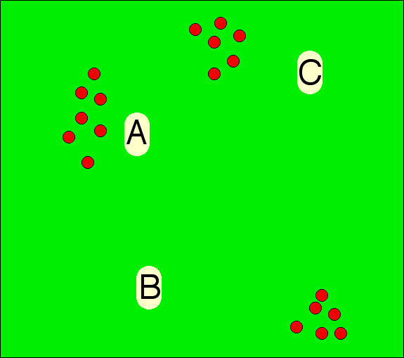

By Jan Kok, Clay Shentrup, & Warren Smith.
| #voters | Their Vote |
|---|---|
| 8 | B>C>A |
| 6 | C>A>B |
| 5 | A>B>C |
For example, should candidate B win? One could argue "no, since A is preferred over B by 11 out of 19 voters." OK, so should A win? "no, since C is preferred over A by 14 out of 19 voters." OK, so C must be the right winner? "Still no, since B is preferred over C by 13 out of 19 voters."
In such situations, there is not necessarily any obvious "Condorcet winner." Such cycles are one inherent problem with all voting systems based on "rank order ballots." That is a good reason to prefer range-voting type ballots. (With them, if all pairwise comparisons are done by comparing the two average scores, cycles are impossible.)
"Naive majoritarianism" is the belief that if a majority of people prefer A over B, then A is always the better choice; and (morally) the choice society always should make.
We now see that naive majoritarianism is simply untenable. That is because it is self-contradictory.
If your value judgment is "X must be better than Y if preferred to Y by a majority", then you can ultimately contradict yourself. Two contradictory statements cannot both be right. (I.e. if you claim that apples are better than bananas are better than oranges are better than apples, then you are lying.) So this value judgement is simply incorrect. It may be a good approximate heuristic, but it inherently cannot be exactly correct.
Anybody interested in devising a moral scheme which is not inherently self-contradictory, should abandon naive majoritarianism and replace it with something else – something that can never lead to a self-contradiction-cycle. What? Well, how about utilitarianism?
To say the same thing, look at it like this.
Ask yourself:
"who is the better candidate in the following scenarios?"
#voters
Their Vote
8
B>A
11
A>B
#voters
Their Vote
13
B>C
6
C>B
#voters
Their Vote
14
C>A
5
A>C
N.M. says A is best.
N.M. says B is best.
N.M. says C is best.
Well... this is really just the election we started with.
Another angle on the demise of naive majoritarianism:
The following example was pointed out by M.Balinski & R.Laraki (I thank H.C.M.de Swart for this):
Suppose there are five voters and two candidates A and B with the following evaluations from the voters:A: (4, 3, 2, 1, 0) Then Majority Rule would make A the winner since the first 3 voters prefer A, but only the last 2 prefer B. But listing those same evaluations of A and B from high to low we find:
B: (3, 2, 1, 5, 4)A: (4, 3, 2, 1, 0) The evaluations of B dominate those of A, so B should win!
B: (5, 4, 3, 2, 1)
So in that scenario, ask yourself: who do you think should win?
How often do such cyclic situations occur in practice in real elections (as opposed to artificial ones cooked up to demonstrate the phenomenon)? That is not known for public elections – although the same link demonstrates that Condorcet Cycles are very common (and very important and damaging) in legislative votes – and that damage would disappear if range voting were used. Also, it is not known what "real" elections even are because in a hypothetical future world where governments use Condorcet voting, elections might be statistically different than now, for example with more issues, more viable candidates, and less bipolar simplism.
In computer simulations of random elections, top-cycles happen quite rarely with 3 candidates (9% of the time) but quite commonly with 20 candidates (68% of the time). In this model, in the limit of a large number C of candidates, the probability that a Condorcet winner exists tends to zero (i.e. the probability that a top-cycle exists goes to 100%) and is asymptotic to 21/28πe-2(lnC)1/2/C.
Cycles are much more common than that if we also count nontop cycles, but this kind of cycle does not destroy Condorcet winners. If all pairwise-defeats sign-matrices were equally likely [which they are not] then the probability that a transitive social ordering would exist – i.e. that there would be no cycle – would be N!/2(N-1)N/2 in an N-candidate election, which falls off superexponentially to zero as N→∞; and the probability that a Condorcet winner exists – i.e. that there be no top-cycle – would be 21-NN, which falls off only exponentially toward zero.
But practical elections may differ statistically from these random ones. There is some reason to believe that real elections will have fewer cycles than random ones. For example, there is Black's single-peakedness theorem which says that in a "one dimensional" situation in which
then there cannot be a Condorcet cycle. On the other hand, there is also some reason to believe cycles might be more frequent in real than random elections. (For example if real situations are more-than-one dimensional.) One reason you might expect cycles in practice is that many voter groups will be motivated to try to create a cycle by "strategic voting." That in fact is exactly what happens (in part) in the DH3 pathology and in burial strategy.
There is very little real data on this question and what there is is attackable as "not really real data" (because, e.g, the vast bulk of the data was from elections actually not conducted with Condorcet methods). Here is an artificial setup to demonstrate how cycles could arise in a realistic practical situation:
| Issue\Candidate | A | B | C |
|---|---|---|---|
| War | Peace! | Ambiguous baloney | War! |
| Corruption | Gambles under false names, buddies with corrupt corporate frauds who pay him $100,000 "lecture fees" for a single speech | Ethical, raised money only from local individuals, abstained PAC money | 70% of money from "club for growth" huge wealth-based special interest PAC |
| Religion | Jewish | Atheist | Christian |
A lot of voters are antiwar (62% of pollees as of 2006 say the Iraq war was a mistake and they want it stopped), so for voters whose top issue is war-vs-peace, the vote is A>B>C. A lot of voters are worried about government corruption. For voters whose top issue is corruption and special interest money, their vote is B>C>A. Finally, a lot of voters are "moral values" voters who seemingly pay no attention to money and care only about the professed religious passion of the candidates. These voters in the 2006 USA are predominantly Evangelical Christians and they vote C>A>B.
If all three of these kinds of voters are roughly equal in number, then the result of the election would be a cyclic preference order.
We know that in the judge-"voting" (i.e. scoring) of the skaters in the 48 top skating events in year 1998, at least 22 of those 48 "elections" contained Condorcet cycles. Indeed these 22 skating events each contained "flip-flops" in which skater C's skate caused the relative rankings of skaters A and B (who had already finished skating) to reverse under the "OBO"-scoring system (which is Condorcet).
Another example (from p.158 of William Poundstone's excellent 2008 book Gaming the Vote) is this picture.
The voters in Squareovia need to decide where to locate their state capital – A, B, or C. As you can see from the red dots, the Squareovian population is concentrated in 3 population centers.
Well, obviously, A is the best location in terms of minimizing average transport-distance. But the voters in the Southeast slightly prefer C and heavily prefer B (as slightly and significantly closer to them, although actually, none of the three choices are very good from their perspective). They vote B>C>A. The Northern voters say C>A>B. The Western voters say A>B>C. Result: cycle (A⊃B⊃C⊃A where "⊃" means "majority preference"). So any "Condorcet voting method," and indeed any method based just on rank-order votes, fails miserably. Range voting, which allows voters to express strength of preferences, would presumably succeed in choosing the best capital A.
(Related Simmons trapezoid example. Related two-event example.)
William H. Riker (also explained in Poundstone's Gaming the Vote) found this typical example of a legislative-vote Condorcet cycle.
This was a Condorcet cycle (where each "<" represents a strong-majority-decision):
If this vote had been conducted using range voting among these 3 choices, we suspect schools would have been funded. But it wasn't, so they weren't.
1. The 2009 Romanian presidential election.
2. In the June 2008 election by the Wikimedia Foundation of its Board of Trustees (one vacant seat to be filled) employing Schulze's beatpath Condorcet method, there were 15 candidates, about 26,000 eleigible voters, and 3019 valid ballots. Ting Chen was the clear Condorcet winner hence won the seat. However, there was a cyclic tie for sixth to ninth position between J.Heiskanen, R.Postlethwaite, S.Smith, and R.Saintonge: JH>RP>SS>RS>JH.
| TC | AB | SK | HC | AH | JH | RP | SS | RS | DR | CS | MB | KW | PW | GK | |
|---|---|---|---|---|---|---|---|---|---|---|---|---|---|---|---|
| Ting Chen | 1086 | 1044 | 1108 | 1135 | 1151 | 1245 | 1190 | 1182 | 1248 | 1263 | 1306 | 1344 | 1354 | 1421 | |
| Alex Bakharev | 844 | 932 | 984 | 950 | 983 | 1052 | 1028 | 990 | 1054 | 1073 | 1109 | 1134 | 1173 | 1236 | |
| Samuel Klein | 836 | 910 | 911 | 924 | 983 | 980 | 971 | 941 | 967 | 1019 | 1069 | 1099 | 1126 | 1183 | |
| Harel Cain | 731 | 836 | 799 | 896 | 892 | 964 | 904 | 917 | 959 | 1007 | 1047 | 1075 | 1080 | 1160 | |
| Ad Huikeshoven | 674 | 781 | 764 | 806 | 832 | 901 | 868 | 848 | 920 | 934 | 987 | 1022 | 1030 | 1115 | |
| Jussi-Ville Heiskanen | 621 | 720 | 712 | 755 | 714 | 841 | 798 | 737 | 827 | 850 | 912 | 970 | 943 | 1057 | |
| Ryan Postlethwaite | 674 | 702 | 726 | 756 | 772 | 770 | 755 | 797 | 741 | 804 | 837 | 880 | 921 | 1027 | |
| Steve Smith | 650 | 694 | 654 | 712 | 729 | 750 | 744 | 778 | 734 | 796 | 840 | 876 | 884 | 1007 | |
| Ray Saintonge | 629 | 703 | 641 | 727 | 714 | 745 | 769 | 738 | 789 | 812 | 848 | 879 | 899 | 987 | |
| Dan Rosenthal | 595 | 654 | 609 | 660 | 691 | 724 | 707 | 699 | 711 | 721 | 780 | 844 | 858 | 960 | |
| Craig Spurrier | 473 | 537 | 498 | 530 | 571 | 583 | 587 | 577 | 578 | 600 | 646 | 721 | 695 | 845 | |
| Matthew Bisanz | 472 | 498 | 465 | 509 | 508 | 534 | 473 | 507 | 531 | 513 | 552 | 653 | 677 | 785 | |
| Kurt M. Weber | 505 | 535 | 528 | 547 | 588 | 581 | 553 | 573 | 588 | 566 | 595 | 634 | 679 | 787 | |
| Paul Williams | 380 | 420 | 410 | 435 | 439 | 464 | 426 | 466 | 470 | 471 | 429 | 521 | 566 | 754 | |
| Gregory Kohs | 411 | 412 | 434 | 471 | 461 | 471 | 468 | 461 | 467 | 472 | 491 | 523 | 513 | 541 |
Each number represents the number of voters who ranked the candidate at the left better than the candidate at the top. A green entry represents a victory in that pairwise comparison by the candidate at the left; a red entry represents a defeat.
I finally finished reading Chapter 9 ("Cycles") of a then unpublished, but now available, book by Nicolaus Tideman – at least I finished the parts I could understand. Tideman used data from 78 STV elections counted by the Electoral Reform Societies of Great Britain and Ireland (who were hired to do the counting), plus 9 other elections, to create a mathematical model for estimating the "Probability of a Majority-Rule Equilibrium" (I think this means a Condorcet Winner?). With an infinite number of voters, and various numbers of candidates, the probabilities he finds are
| #candidates | Prob(Majority Rule Equilibrium) |
|---|---|
| 3 | 0.99013 |
| 4 | 0.98012 |
| 5 | 0.97259 |
| 6 | 0.96651 |
| 8 | 0.95537 |
| 10 | 0.94357 |
| 15 | 0.90882 |
| 20 | 0.86840 |
| 25 | 0.82493 |
| 30 | 0.78027 |
A description of Tideman's underyling model and a recalculation (and correction) of his numbers is here. So anyhow, this is based partly on theory and partly on "real" data (albeit of somewhat questionable "reality") and it finds considerably smaller (4 to 9 times smaller) top-cycle probabilities in "reality" than in computer simulations of random elections.
In Tideman's model, the probability that a Condorcet winner exists also tends asymptotically to zero, but more slowly than in the (simpler, but less realistic) random election model.
William V. Gehrlein in his book Condorcet's paradox, (Springer Theory and Decision Library 2006) also addresses this question, but we have not yet seen this book.
Scott L. Feld & Bernard Grofman: Who's afraid of the big bad cycle? Journal of Theoretical Politics 4,2 (1992) 231-237. [For a given set of 3 candidates, the chance of a cycle among them is about 1 in 200 based on 71 cycles found in 14270 candidate-triplets arising in election statistics they collected from the real world. This compares with Tideman's more modern 1 in 100 estimate based on similar methodology and more data.]